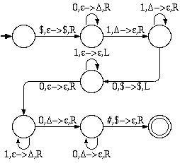

Construct non-deterministic pushdown automata to accept the following languages.
Construct deterministic pushdown automata to accept the following languages.
Construct context free grammars to accept the following languages.
S -> 0A0 | 1A1
A -> 0A | 1A | e
S -> 0A | 1
A -> 0S | 1S | e
S -> 0 | 0S0 | 0S1 | 1S0 | 1S1
S -> 0A1 | 0B11
A -> 0A1 | e
B -> 0B11 | e
S -> AC | BC | DE | DF
A -> 0 | 0A | 0A1
B -> 1 | B1 | 0B1
C -> 2 | 2C
D -> 0 | 0D
E -> 1 | 1E | 1E2
F -> 2 | F2 | 1F2
S -> e | 0S1S1S | 1S0S1S | 1S1S0S
S -> 0A | 1B
A -> 0AA | 1S | 1
B -> 1BB | 0S | 0
The grammar is ambiguous because we can find strings which have multiple derivations:
S 0A 0 0AA 00 1S 1 001 1B 1 0011 0 1 | S 0A 0 0AA 00 1 1S 0011 0A 00110 1 |
The ambiguity is primarly due to the following rules:
If we start with an IF-THEN statement and substitute an IF-THEN-ELSE for the consequent, we get:
if condition then if condition then STMT else STMT
However, if we start with an IF-THEN-ELSE clause and substitute an IF-THEN for the consequent, we get the same thing. So, it is ambiguous. Note that many real programming languages (such as C and Java) exhibit this exact ambiguity in their syntax.
S -> A | AB0 | A1A
A -> A0 | e
B -> B1 | BC
C -> CB | CA | 1B
Remove all e rules
S -> e | A | AB0 | A1A | B0 | A1 | 1A
A -> A0 | 0
B -> B1 | BC
C -> CB | CA | 1B
Remove unit rules
S -> e | A0 | 0 | AB0 | A1A | B0 | A1 | 1A
A -> A0 | 0
B -> B1 | BC
C -> CB | CA | 1B
Convert remaining rules into proper form
S -> e | A0 | 0 | AS1 | B0 | A1 | 1A
A -> A0 | 0
B -> B1 | BC
C -> CB | CA | 1B
S1 -> B0 | 1A
S -> e | AN0 | AS1 | BN0 | AN1 | N1A
A -> AN0 | 0
B -> BN1 | BC
C -> CB | CA | N1B
S1 -> BN0 | N1A
N0 -> 0
N1 -> 1
NOTE: We did not need to create a new start state because the given one did not appear in the right side of any rule.
S -> A | CB
A -> C | D
B -> 1B | 1
C -> 0C | 0
D -> 2D | 2
Converts to
S -> 0C | 0 | 2D | 2 | CB
A -> C | D
B -> 1B | 1
C -> 0C | 0
D -> 2D | 2
A is now useless and can be removed.
We begin with a single nonterminal ("S") and form the string by making substitutions according to the rules. Each rule of the form A->BC adds a new nonterminal, and each rule of the form A->a converts one nonterminal into a terminal. Since it takes n-1 steps to grow our string from the original nonterminal to n nonterminals, and then n steps to convert each of those nonterminals into terminals, it takes 2n-1 steps to derive a string of length n.
L(G) is infinite if any nonterminal shows up in a reduction of itself because this indicates a loop in the grammar. In the largest possible derivation, starting with the start variable ("S") we replace it with two other variables and each of those are replaced with two other variables and so on. Since no variable can be repeated along any branch of the tree without creating a cycle, the tree will be depth b and will contain 2b-1 nodes. So, if a derivation requires 2b or more steps, the grammar must contain a cycle and L(G) must be infinite.
Show that the set {0n1n0n | n>0} is accepted by a 2-way PDA.

This 2-way PDA works by moving right across the string to make sure it begins with 0n1n. Then it moves left to the beginning of the 1s and continues to the right to check for 1n0n.